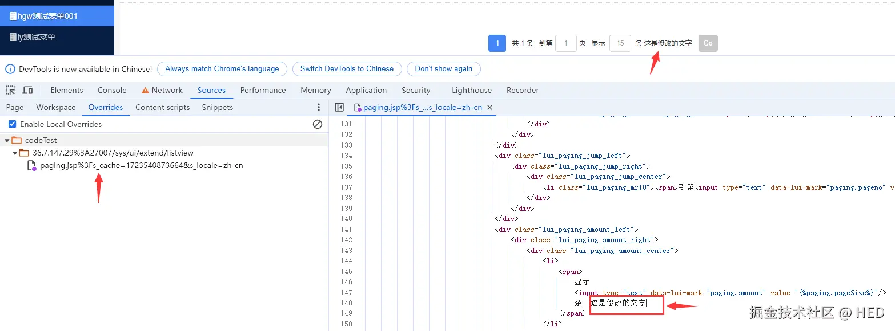
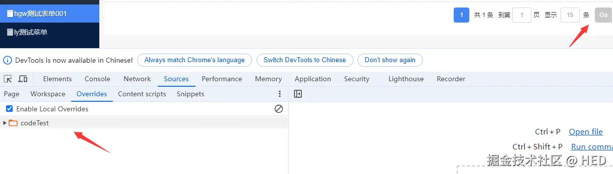

灏Tian · 2024-09-15 16:44:28
利用 Chrome 开发者工具断点调试功能调试修改代码，一刷新就什么都没有了，且只能调试 JS 代码，太尴尬了。
想刷新后，原来修改调试的的代码还在，且 JSP、JS、CSS 等能调试，那赶快试试下面这种方法吧。
第一步：
在浏览器开发者工具中打开下面的面板sources -> overrides!
第二步：
打开 Select folder for overrides，选择要存放代码的文件夹
第三步：
点击允许访问文件夹，overrides 生成刚才选择的文件夹
第四步：
在 Network 中选择一个文件，右击 Override content 修改文件，并按 ctrl+s 保存，就会在本地生成对应页面的代码。
第五步：
刷新页面，即可在页面上看到修改的内容
第六步：
如果想去掉修改的内容，删除对应修改的内容或直接删除本地文件，再刷新即可。
